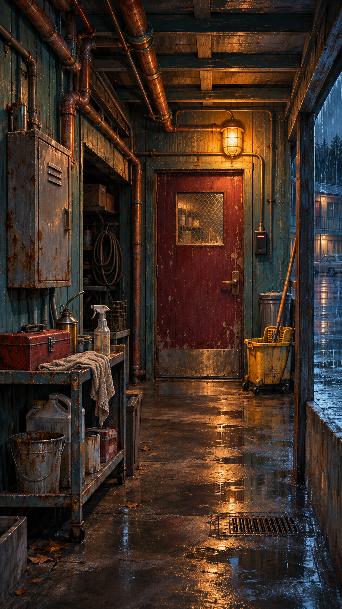
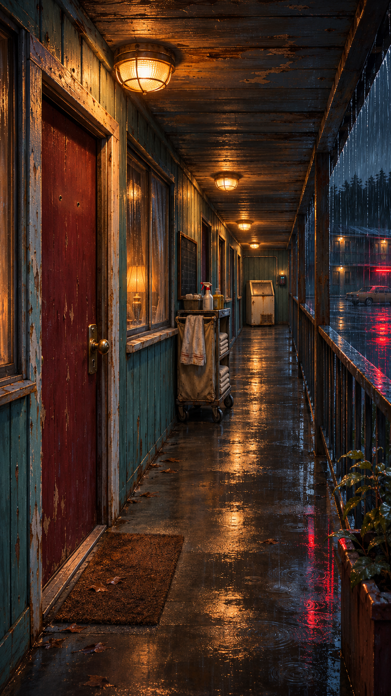
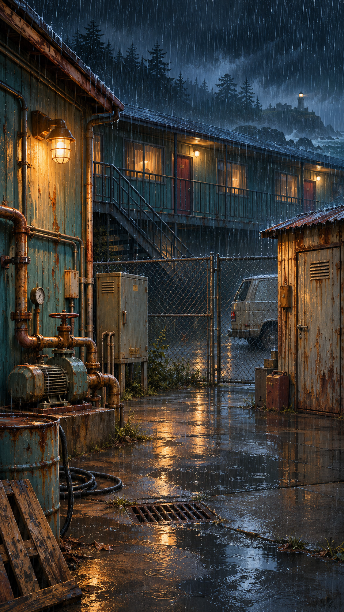
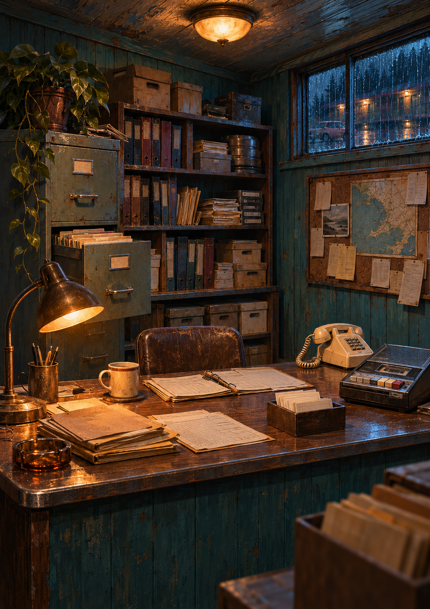
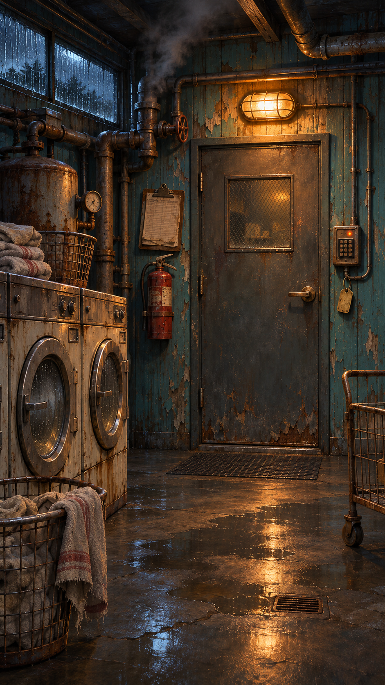

Five separate AI-generated environment paintings following the supplied Mariner Motel direction. Native source images shown below; these are backdrop plates. Puzzle overlays remain visible until bespoke interactive layers are aligned.




